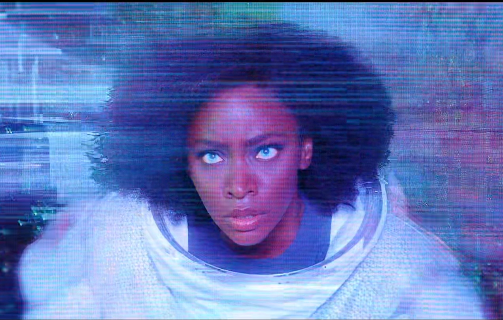
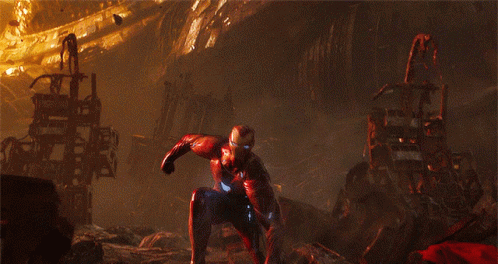
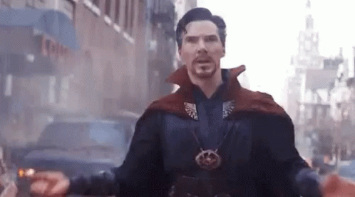
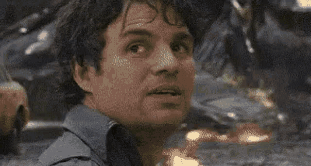

- Monica Rambeau
- Captain Monica Rambeau is the daughter of the late Maria Rambeau. During her childhood, she befriended Carol Danvers, a friend of her mother, and refused to believe the reports that Danvers had died in a mysterious plane crash.

Top 4 Marvel Characters

Iron Man
Anthony Edward "Tony" Stark was a billionaire industrialist, a founding member of the Avengers,
and the former CEO of Stark Industries. A brash but brilliant inventor, Stark was self-described
as a genius, billionaire, playboy, and philanthropist. He was kidnapped by the Ten Rings
in Afghanistan. With his life on the line, Stark
created an armored suit which he used to escape his captors. Upon returning home, he utilized
several more armors to use against terrorists, as well as Obadiah Stane.
Following his fight against Stane, Stark publicly revealed himself as Iron Man.

Dr. Strange
Doctor Stephen Vincent Strange, M.D., Ph.D is a Master of the Mystic Arts. Originally being a brilliant but arrogant neurosurgeon, Strange got into a car accident which resulted with his hands becoming crippled. Once Western medicine failed him, Strange embarked on a journey to Kamar-Taj, where he was trained by the Ancient One in the ways of Magic and the Multiverse.

Wanda Maximoff
Wanda Maximoff is a native of Sokovia who grew up with her fraternal twin brother, Pietro. Born with the latent mythical ability to harness Chaos Magic, she developed a hatred against Tony Stark and rallied anti-American protests after the Novi Grad Bombings killed her parents. Years later, in an effort to help purge their country of strife, the twins joined HYDRA and agreed to undergo experiments with the Scepter under the supervision of Baron Strucker, with the Mind Stone awakening and amplifying Wanda's powers.

Bruce Banner
Doctor Robert Bruce Banner, M.D., Ph.D., is a renowned scientist and a founding member of the Avengers.
Highly respected for his work in Biochemistry, Nuclear Physics, and Gamma Radiation, Banner was
commissioned by Thaddeus Ross to recreate the Super Soldier Serum that created Captain America. During the experiment, Banner was exposed to
dangerous levels of gamma radiation. As a result, the mild-mannered
scientist found that when angered, provoked, or excited, his body and brain would transform into a
huge, rage-fueled, primitive-minded creature known as Hulk.
I used to be embarassed because I was just a comic book writer
while other people were building bridges or goind on to medical
careers. And then I began to realize: Entertainment is one of the
nost important things in people's lives. Without it, they might
go off the deep end.
- Call to action it's time!
- want to be part of our team? click that button over there!